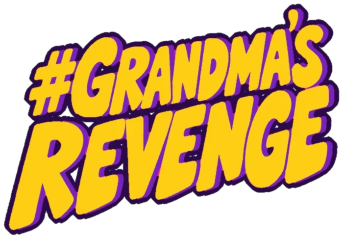
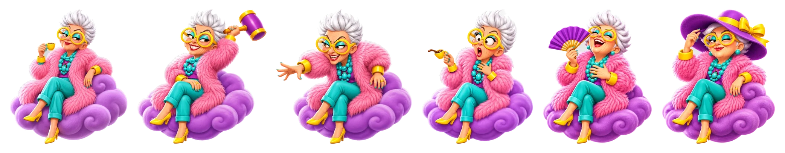
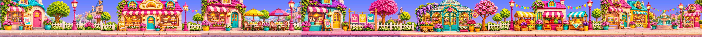
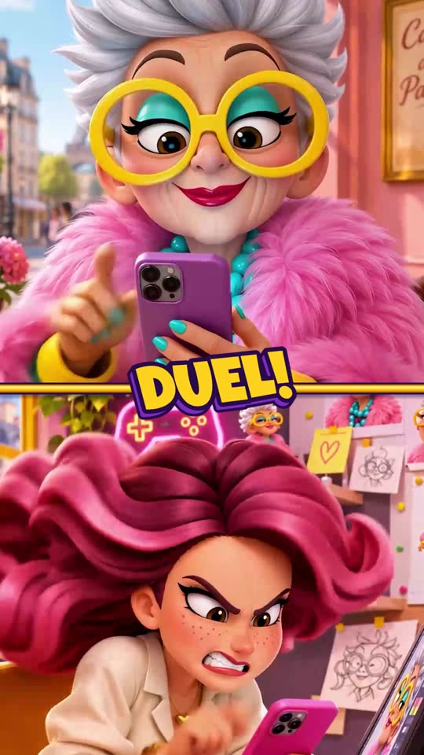
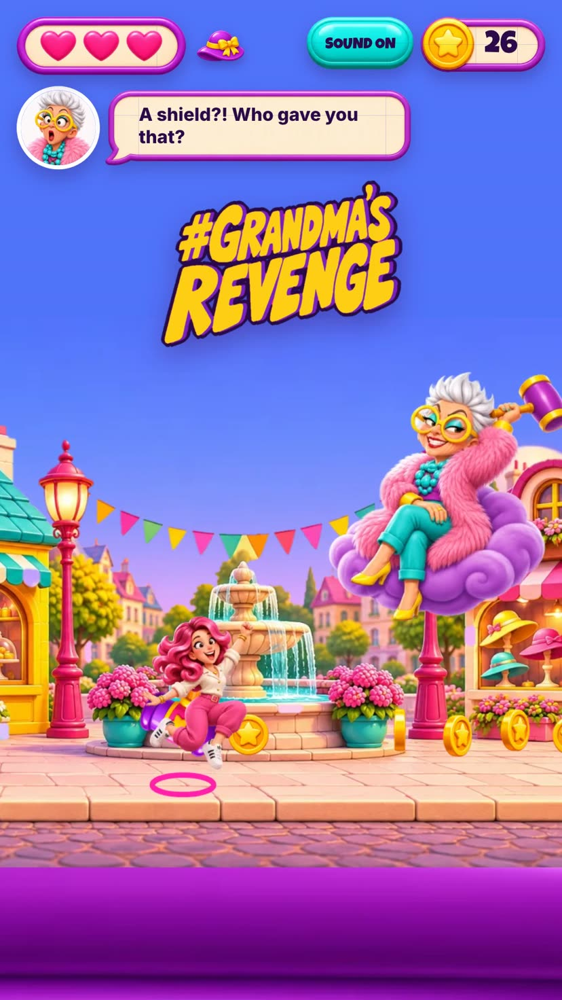
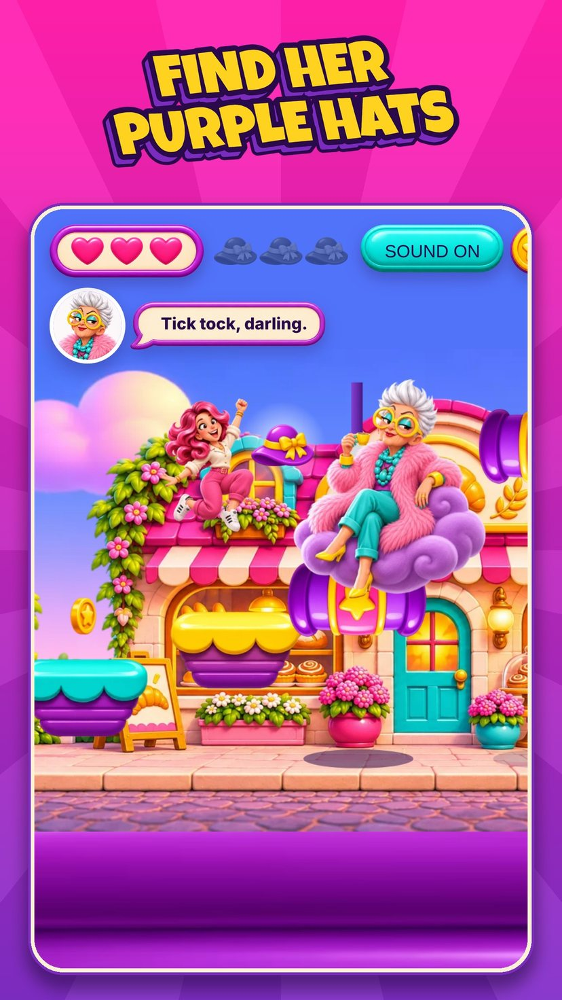
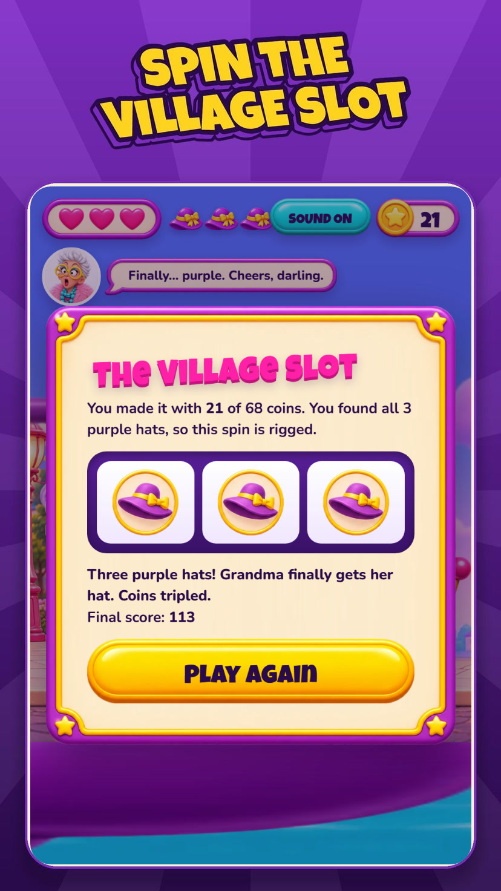

Talia
The designer. Pink hair, pink trousers, bad at reading briefs. She runs, jumps and loses hearts.
Spec campaign · mobile gaming
One story told four ways: a film, a playable ad, a store page and a game you can finish in two minutes.

The idea
Village-raid games run on one feeling: someone attacked my village and I want it back. I made that feeling personal. Talia is a designer who creates a character, Grandma, and ignores the one thing Grandma asks for. So Grandma raids her village.
The designer is me, and the joke is on me. That gave the campaign a villain people like, a reason for the conflict, and a prize that is funnier than coins.
"Darling... you forgot your shield."
The cast
The designer. Pink hair, pink trousers, bad at reading briefs. She runs, jumps and loses hearts.
Pink fur, yellow glasses, a purple cloud and a bag of hammers. Every line she says is polite and a threat.

The world
The village is seven backgrounds built to one rule: the pavement sits at the same height in every painting, so they join into a single street. Studio, bakery, café, print shop, greenhouse, market, and the square with the slot stall.

Scroll sideways to walk the village
The funnel

Stop the scroll
40 seconds, vertical. Sets up the grudge and ends on the hat. Captions in the logo lettering so it works on mute.

Let them try
20 seconds. Talia runs by herself and one tap jumps. One shield, one hat, one spin.
Play the ad
Close the install
Icon, preview video and six screenshots that repeat the film's promises in the same lettering.
Open the store page
Keep the promise
Seven streets, three kinds of hammer, three hidden hats and a slot finale.
Play the gameThe thread
A campaign falls apart when the ad promises one thing and the game delivers another. Here one object appears at every step, and each step pays off a little more of it.
The hooks
The first three seconds decide whether anyone sees the rest. I re-cut the same film into three different openings, each testing a different reason to stop scrolling. Same characters, same captions, same sound; only the first shot changes. Each is under ten seconds.
Hook A · Character
Opens on Grandma's smile and her first line. Tests curiosity and the villain's personality. The original cut.
Hook B · Game first
Opens on the notification every village-raid player knows, then jumps straight to the duel. Tests whether the game's own feeling wins over the story.
Hook C · Reward first
Opens on the payoff, Grandma in her hat, then rewinds to the reason for the fight. Tests reward before setup.
What I would read first: how many people stay past three seconds, then how many reach the end card. A hook only wins if installs follow. This is a spec campaign, so these are untested hypotheses.
The process
Grandma's Revenge is a self-initiated spec project. The characters, world and game are original. Images, video shots and music were generated with AI tools and directed, selected and edited by Talia Naiman.